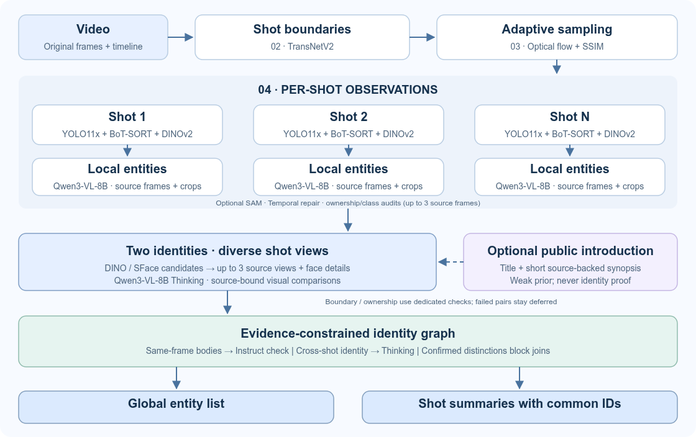

04 / GLOBAL ENTITY IDENTITY초안 · 검수 진행 중
같은 대상은, 모든 샷에서 같은 ID로.
샷별 Entity 추출에서 영상 전체의 일관된 인물·대상 목록까지
컨셉
시간적으로 섞인 트랙을 점검하고, 로컬 Entity마다 별도 ID에서 시작합니다.
두 대상의 원본·crop을 한 쌍씩 비교해 시각 근거가 있는 쌍만 공통 전역 ID로 연결합니다.
전체 구조

핵심 변경
① 로컬 점검시간적 혼합을 점검하고, 검출·VLM 분류 충돌은 원본 최대 3프레임으로 재확인합니다.
② 한 쌍씩 비교여러 샷의 대표 모습·얼굴 확대를 비교하고, 8B Thinking이 고른 이미지를 실제 근거 프레임에 연결합니다.
③ 근거로 병합동시 등장 대상은 원본 한 장에서 Instruct로 신체 수를 확인합니다. 별개 신체는 병합을 막고, 미확인 부위는 따로 표시합니다.
이전 외형 설명은 배제하고, 출처 있는 소개는 약한 문맥으로만 사용합니다. 경계·소유관계는 별도 검토하며, 부분은 같은 장면의 직접 연결이 필요합니다.
검수 상태 Sintel 홍보 영상 · 17개 샷 · 약 52초
실행 및 최종 회귀 검수 진행 중입니다. 아래 수치는 최종 결과 확인 후 갱신합니다.
동일 인물 연결미확정
별도 대상 구분미확정
부분 회귀 · 테스트미확정
부분 정답 회귀와 영상 검수를 구분하며, 확인하지 않은 정확도를 성공으로 표시하지 않습니다.